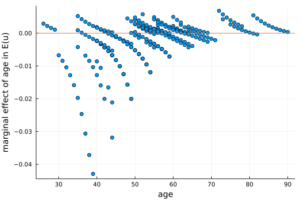

You may also download the data and the example as a Jupyter notebook in a zip file.
We use an example to go through the specification and estimation process of using SFrontiers in a stochastic frontier (SF) analysis. The example is a cross-sectional stochastic production frontier model with the normal and truncated-normal distribution assumptions. In addition, exogenous determinants are included in the model in the style of Wang (2002). We choose this elaborated model to showcase the features of SFrontiers.
- Model Setup
- 1: Giving Model Specification using
sfmodel_spec() - 2: Providing Initial Values using
sfmodel_init()(optional) - 3: Choosing Maximization Options (and others) using
sfmodel_opt()(optional) - 4: Starting Model Maximization using
sfmodel_fit() - 5: Results and Post Estimation Analysis
- 5.1 hypothesis testing
- 5.2 inefficiency and efficiency index
- 5.3 marginal effects
- 5.4 bootstrapping standard errors of the mean marginal effects
- 5.5 predicted values of equations
- 6. save results to disk
Model Setup
Consider the following setup:
\[ \mathbf{y} = \mathbf{x} \beta + \mathbf{v} - \mathbf{u},\]
where $\mathbf{y}$ is $(N\times 1)$, $\mathbf{x}$ is $(N\times k)$ and includes a column of 1 for intercept, and $\beta$ is $(k \times 1)$. $\mathbf{v}$ and $\mathbf{u}$ are from random variables assumed to follow certain distribution assumptions.
We use $x_i$ (which is ($1 \times k$)) to denote the $i$th observation of $\mathbf{x}$. Other notations follow similarly. The specification of the Wang (2002) model is thus:
\[\begin{aligned} y_i & = x_i \beta + \epsilon_i,\\ \epsilon_i & = v_i - u_i,\\ v_i & \sim N(0, \sigma_v^2),\\ u_i & \sim N^+(\mu, \sigma_u^2),\\ \mu & = z_i \delta \quad \mathrm{and} \quad \sigma_u^2 = \exp(z_i \gamma). \end{aligned}\]
Here, $N^+(\mu, \sigma_u^2)$ denotes a truncated normal distribution obtained by truncating the normal distribution $N(\mu, \sigma_u^2)$ from below at 0. The $\mu$ and $\sigma_u^2$ are thus the mean and the variance of the normal distribution before the truncation. $z_i$ is a vector of exogenous determinants of inefficiency. Wang (2002) parameterizes both $\mu$ and $\sigma_u^2$ by the same vector of $z_i$ while Battese and Coelli (1995) only parameterize $\mu$.
Note that the variance parameters $\sigma_v^2$ and $\sigma_u^2$ are parameterized using exponential functions to ensure positive values. In the case of $\sigma_v^2$,
\[ \sigma_v^2 = \exp(c_v),\]
where $c_v \in R$ is an unconstrained constant, and the log-likelihood maximization is w.r.t. $c_v$ (among others).
goal of estimation
Our goals of the model estimation include:
- estimate model parameters $\{\beta, \delta, \gamma, \sigma_v^2 \}$,
- compute the inefficiency index $E[u_i | \epsilon_i]|_{\epsilon_i =\hat{\epsilon}_i}$ and the efficiency index $E[\exp(-u_i) | \epsilon_i]|_{\epsilon_i =\hat{\epsilon}_i}$ at the observation level,
- calculate the marginal effect of $z_i$ on $E(u_i)$.
1: Giving Model Specification using sfmodel_spec()
We use the production data from paddy farmers in India as an empirical example. The $\mathbf{y}$ is the annual rice production and $\mathbf{x}$ is a vector of agricultural inputs.
There are two ways to provide data to Sfmodel for estimation. One is to use data from a DataFrame where column names of the data are variable names. The other is to use data from matrices or vectors. The latter is the likely scenario in simulation studies where we generate data matrices and feed them to the model. Different ways of providing data would require slightly different specifications of sfmodel_spec().
Since the farmers data is formatted, it is natural to use the DataFrame approach. We will show the matrix approach later.
using DataFrame data
Our farmers dataset is in the .csv format, and we read it in using the CSV package and save it as a DataFrame with the name df.
julia> using SFrontiers # main packages
julia> using DataFrames, CSV # handling data
julia> df = CSV.read("sampledata.csv", DataFrame; header=1, delim=",");
julia> df[!, :_cons] .= 1.0; # append column _cons as a column of 1 We append a column of 1 to df with the column name _cons. Adding this constant variable to the dataset is essential because we will use it to estimate constant parameters; more on this later. Before estimation, users should ensure that the data in df has been cleaned, i.e., it contains no missing values or any anomaly that may affect the estimation.
Let's see what is in the data.
julia> describe(df) # summary statistics
11×7 DataFrame
Row │ variable mean min median max nmissing eltype
│ Symbol Float64 Real Float64 Real Int64 DataType
─────┼───────────────────────────────────────────────────────────────────────
1 │ yvar 7.27812 3.58666 7.28586 9.80335 0 Float64
2 │ Lland 1.05695 -1.60944 1.14307 3.04309 0 Float64
3 │ PIland 0.146997 0.0 0.0 1.0 0 Float64
4 │ Llabor 6.84951 3.2581 6.72263 9.46622 0 Float64
5 │ Lbull 5.64161 2.07944 5.68358 8.37008 0 Float64
6 │ Lcost 4.6033 0.0 5.1511 8.73311 0 Float64
7 │ yr 5.38007 1 5.0 10 0 Int64
8 │ age 53.8856 26 53.0 90 0 Int64
9 │ school 2.02583 0 0.0 10 0 Int64
10 │ yr_1 5.38007 1 5.0 10 0 Int64
11 │ _cons 1.0 1 1.0 1 0 Int64Now we give model information to SFrontiers using sfmodel_spec(). Before we start: I take advantage of Julia's support of unicode characters and use a few math symbols in SFrontiers functions. They are not difficult to use, and they help to match codes to models in papers thus making the code easier to understand. Nevertheless, I provide ascii alias of those symbols that can be used as alternatives.
This function generates a (global) dictionary that is automatically remembered and used in subsequent commands. The following specification indicates a Wang (2002) type of model, i.e., one that has a truncated normal distribution on $u_i$ and both $\mu$ and $\sigma_u^2$ are parameterized by a vector of variables.
julia> sfmodel_spec(sftype(prod), sfdist(trun),
@depvar(yvar),
@frontier(Lland, PIland, Llabor, Lbull, Lcost, yr, _cons),
@μ(age, school, yr, _cons),
@σᵤ²(age, school, yr, _cons),
@σᵥ²(_cons), message = true);sftype(prod)indicates a production-frontier type of model. The alternative iscostfor cost frontier where the composed error is $v_i + u_i$.sfdist(trun)specifies the truncated-normal distribution assumption on $u_i$. Alternatives includehalf,expo, andtrun_scaling.@depvar(.)specifies the dependent variable.@frontier(.)specifies the list of variables used in the frontier equation (i.e., the data of $\mathbf{x}$). The variables are assumed to be linear in the equation.@μ(.)(or@mu(.)) specifies the variables of inefficiency determinants as a linear function inμ.@σᵤ²(.)(or@sigma_u_2(.)) and@σᵥ²(.)(or@sigma_v_2(.)) specify the variables to parameterize the variances. Here we include only the variable_consin $\sigma_v^2$ so it is estimated as a constant.messagedetermines whether to print the confirmation message of "A dictionary from ...". The default isfalse.
Note how the constant parameter $\sigma_v^2$ is estimated. Recall the programming trick of using $\sigma_v^2 = \exp(c_v)$ in the likelihood function. Here, $c_v$ is simply the coefficient of the _cons variable.
SFrontiers estimates intercepts and constant parameters as the coefficients of a constant variable. That is, if a parameter is constant, SFrontiers requires a variable with values equal to 1. It is true for all equations.
using matrix data (alternative data input)
As aforementioned, data for estimation could also come from matrix and vectors, though the syntax of sfmodel_spec() is slightly different. The following code snippet has a simple example where we generate data in matrix for a normal half-normal model, and use them in sfmodel_spec(). The number of observations is 300.
using SFrontiers, Random, Distributions cons, x, v = ones(300,1), [randn(300, 2) ones(300,1)], randn(300,1) disTN = TruncatedNormal(0.0, 1.0, 0.0, Inf) # half-normal dist with std dev = 1 u = rand(disTN, (300,1)) # draw from half-normal r.v. y = x*ones(3)*0.5 .+ v .- u sfmodel_spec(sftype(prod), sfdist(half), depvar(y), frontier(x), σᵤ²(cons), σᵥ²(cons))
Note that the only difference in the syntax is using the function type of equation names (e.g., depvar()) instead of the macro type names (e.g., @depvar()). The rest of the estimation procedures are the same.
Macro type of equation names (@depvar(), @frontier(), @μ(), etc.) are used only when the arguments are column names from DataFrames. For everything else, function type of equation names (depvar(), frontier(), μ(), etc.) are used.
2: Providing Initial Values using sfmodel_init() (optional)
Providing initial values is helpful in many cases though it is optional. You could skip it entirely or provide initial values only to a partial list of the equations. If missing (all or part of the equations), default values will be used. Currently, the default uses the OLS estimates as initial values for coefficients in frontier() and $0.1$ for all other parameters. Here we use a mixed strategy in this example.
julia> b_ini = ones(4)*(0.1) # a 4x1 vector of 0.1
julia> sfmodel_init( # frontier(bb), # skip and use default
μ(b_ini), # as a vector
σᵤ²(-0.1, -0.1, -0.1, -0.1), # manually input the vector
σᵥ²(-0.1) ) # scalar- The order of equations in
sfmodel_init()is not important. You can putμ()before or afterσᵥ²(), it does not matter. - The function type of equation names (e.g.,
frontier(),μ(), etc.) are used insfmodel_init(). - Initial values specified in
σᵥ²()is w.r.t. the $c_v$ as in $\sigma_v^2 = \exp(c_v)$. Put differently, the initial value is w.r.t. $\log(\sigma_v^2)$. If we putσᵥ²(-0.1), it means we have in mind the initial value of $\sigma_v^2$ being $\exp(-0.1) = 0.905$.
SFrontiers uses names such as μ, σᵥ², gamma, depvar, frontier, etc.. If the names were used elsewhere in the program for different purposes (for instance, using μ to denote the value of a parameter), or users import other packages that use the same names, the name conflicts would arise. Signs of the problem include error messages such as
MethodError: objects of type ... are not callableThere are simple ways to workaround:
- Use fully qualified names. For instance, use
SFrontiers.σᵥ²instead ofσᵥ². - Use an alias if there is one. For instance, use
sigma_v_2instead ofσᵥ². Check out the section ofAPI Referencefor more information.
3: Choosing Maximization Options (and others) using sfmodel_opt() (optional)
The main purpose of this function is to choose options for the numerical maximization process, including the choice of optimization algorithms, the maximum number of iterations, the convergence criterion, and others. SFrontiers uses Julia's Optim package to do the maximization, though only a subset of Optim's options are directly accessible through sfmodel_opt().
An effective estimation strategy for challenging optimization problems is to use a non-gradient algorithm in the first stage (warmstart) for a few iterations and then switch to gradient-based algorithms in the second stage (main) for speed and accuracy. SFrontiers uses the two-step strategy by default.
This function is also optional. All or part of the specifications may be skipped. If missing, default values will be used. The following example uses the default values.
julia> sfmodel_opt(warmstart_solver(NelderMead()),
warmstart_maxIT(400),
main_solver(Newton()),
main_maxIT(2000),
tolerance(1e-8))warmstart_solver(NelderMead()): specifies theNelder-Meadalgorithm (which is gradient-free) in the first stage estimation. Mind the braces "()" which is part of the algorithm name. Using a non-gradient algorithm in the first stage is recommended.main_solver(Newton()): specifies theNewtonmethod (which uses 2nd derivatives, i.e., Hessian) in the second stage estimation.warmstart_maxIT(400)andmain_maxIT(2000): the maximum numbers of iterations in the first and the second stage estimation.tolerance(1e-8): set the convergence criterion concerning the absolute tolerance in the gradient to1e-8. For non-gradient algorithms, it controls the main convergence tolerance, which is solver-specific. This is a wrapper of Optim'sg_toloption.
If the two-stage strategy is not desired, we can skip the warmstart stage by giving empty keyword values to the first stage options, such as warmstart_solver() or warmstart_maxIT(), or both. Note that if we skip the keywords (i.e., missing warmstart_solver or warmstart_maxIT entirely), the default will be reinstated. Again, the first stage estimation will only be skipped when empty values are explicitly given to the related options.
In addition to controlling the maximization procedures, sfmodel_opt() also provides options to control other things. They and their default values are the follows.
table_format(text): specify the format to print coefficient tables on the screen aftersfmodel_fit()is run. The choices includetext,html(good for web-based notebooks such as Jupyter, Pluto), andlatex.banner(true): show banner to help visually identify the start of the estimation.verbose(true): show interim and final results.ineff_index(true): compute the Jondrow et al. (1982) inefficiency index and the Battese and Coelli (1987) efficiency index.marginal(true): calculate the marginal effect of the inefficiency determinants (if any) on the unconditional mean of inefficiency.
Turning the above options to false may sometimes be desirable, particularly in simulation settings.
4: Starting Model Maximization using sfmodel_fit()
Previous steps prepare the model, and now we are ready to estimate it. We use sfmodel_fit() to start the estimation, and it returns a dictionary containing coefficient estimates, efficiency and inefficiency index, marginal effects of inefficiency determinants, and other information of the model. In the following example, we save the returned dictionary in res.
julia> res = sfmodel_fit(useData(df)) # df is the DataFrameuseData(df): name of the DataFrame used in the 1st step.- If the estimation data is from matrix and vectors, the
useData()option should be omitted. That is, we would dores = sfmodel_fit().
5: Results and Post Estimation Analysis
Main results of the estimation will be shown on the screen after it is done. Let's see what we have.
*********************************
Estimation Results:
*********************************
Model type: the non-monotonic model of Wang (2002, JPA), normal and truncated-normal
Number of observations: 271
Number of total iterations: 153
Converged successfully: true
Log-likelihood value: -82.02573
┌──────────┬────────┬─────────┬──────────┬──────────┬────────┬─────────┬─────────┐
│ │ Var. │ Coef. │ Std.Err. │ z │ P>|z| │ 95%CI_l │ 95%CI_u │
├──────────┼────────┼─────────┼──────────┼──────────┼────────┼─────────┼─────────┤
│ frontier │ Lland │ 0.2582 │ 0.0725 │ 3.5607 │ 0.0004 │ 0.1161 │ 0.4003 │
│ │ PIland │ 0.1717 │ 0.1761 │ 0.9751 │ 0.3304 │ -0.1734 │ 0.5169 │
│ │ Llabor │ 1.1658 │ 0.0840 │ 13.8805 │ 0.0000 │ 1.0012 │ 1.3304 │
│ │ Lbull │ -0.4215 │ 0.0596 │ -7.0668 │ 0.0000 │ -0.5384 │ -0.3046 │
│ │ Lcost │ 0.0142 │ 0.0128 │ 1.1087 │ 0.2686 │ -0.0109 │ 0.0394 │
│ │ yr │ 0.0183 │ 0.0095 │ 1.9227 │ 0.0556 │ -0.0004 │ 0.0369 │
│ │ _cons │ 1.5429 │ 0.3578 │ 4.3123 │ 0.0000 │ 0.8417 │ 2.2442 │
│ μ │ age │ -0.0479 │ 0.0303 │ -1.5804 │ 0.1153 │ -0.1073 │ 0.0115 │
│ │ school │ -0.2143 │ 0.1711 │ -1.2523 │ 0.2116 │ -0.5497 │ 0.1211 │
│ │ yr │ 0.1480 │ 0.1248 │ 1.1853 │ 0.2370 │ -0.0967 │ 0.3926 │
│ │ _cons │ 1.0418 │ 0.7283 │ 1.4305 │ 0.1538 │ -0.3856 │ 2.4693 │
│ log_σᵤ² │ age │ 0.0256 │ 0.0096 │ 2.6660 │ 0.0082 │ 0.0068 │ 0.0445 │
│ │ school │ 0.1141 │ 0.0569 │ 2.0055 │ 0.0460 │ 0.0026 │ 0.2256 │
│ │ yr │ -0.2256 │ 0.0496 │ -4.5507 │ 0.0000 │ -0.3228 │ -0.1284 │
│ │ _cons │ -1.1399 │ 0.8904 │ -1.2803 │ 0.2016 │ -2.8850 │ 0.6052 │
│ log_σᵥ² │ _cons │ -3.2667 │ 0.2623 │ -12.4556 │ 0.0000 │ -3.7808 │ -2.7527 │
└──────────┴────────┴─────────┴──────────┴──────────┴────────┴─────────┴─────────┘
Convert the constant log-parameter to its original scale, e.g., σ² = exp(log_σ²):
┌─────┬────────┬──────────┐
│ │ Coef. │ Std.Err. │
├─────┼────────┼──────────┤
│ σᵥ² │ 0.0381 │ 0.0100 │
└─────┴────────┴──────────┘
Table format: text. Use sfmodel_opt() to choose between text, html, and latex.
***** Additional Information *********
* OLS (frontier-only) log-likelihood: -104.96993
* Skewness of OLS residuals: -0.70351
* The sample mean of the JLMS inefficiency index: 0.33416
* The sample mean of the BC efficiency index: 0.7462
* The sample mean of inefficiency determinants' marginal effects on E(u): (age = -0.00264, school = -0.01197, yr = -0.0265)
* Marginal effects of the inefficiency determinants at the observational level are saved in the return. See the follows.
* Use `name.list` to see saved results (keys and values) where `name` is the return specified in `name = sfmodel_fit(..)`. Values may be retrieved using the keys. For instance:
** `name.loglikelihood`: the log-likelihood value of the model;
** `name.jlms`: Jondrow et al. (1982) inefficiency index;
** `name.bc`: Battese and Coelli (1988) efficiency index;
** `name.marginal`: a DataFrame with variables' (if any) marginal effects on E(u).
* Use `keys(name)` to see available keys.
**************************************As reminded in the printout, all of the shown statistics and many of the other model information are saved in the dictionary which can be called later for further investigation. We have saved it in res. Let's see the list of available keys.
julia> keys(res) # keywords in res
(:converged, :iter_limit_reached, :_______________, :n_observations, :loglikelihood, :table, :coeff, :std_err, :var_cov_mat, :jlms, :bc, :OLS_loglikelihood, :OLS_resid_skew, :marginal, :marginal_mean, :_____________, :model, :depvar, :frontier, :μ, :σₐ², :σᵤ², :σᵥ², :log_σₐ², :log_σᵤ², :log_σᵥ², :type, :dist, :PorC, :timevar, :idvar, :table_format, :modelid, :verbose, :hasDF, :transfer, :coeff_frontier, :coeff_μ, :coeff_log_σᵤ², :coeff_log_σᵥ², :________________, :Hessian, :gradient_norm, :actual_iterations, :______________, :warmstart_solver, :warmstart_ini, :warmstart_maxIT, :main_solver, :main_ini, :main_maxIT, :tolerance, :eqpo, :redflag, :list)Among the keywords is the term :coeff, which indicates the saved coefficient vector. We may retrieve the coefficient vector using res.coeff and save it in the name b0 possibly for later use.
julia> b0 = res.coeff
16-element Vector{Float64}:
0.25821563731697006
0.17173767708354643
1.1658044162884234
-0.42146760552733187
0.01423909223722116
0.018252219999852187
1.5429396143493048
-0.04790078227380377
-0.21428860376262238
0.14796117144545648
1.0418278985865976
0.02563602493190338
0.11408617664438392
-0.22559216646964741
-1.1399135714873936
-3.2667147597612805The estimation table shown above with the coefficients, standard errors, etc., may also be retrieved using the keyword table (e.g., res.table), though it may not be formatted as pretty.
5.1 hypothesis testing
We may conduct a likelihood ratio (LR) test to see if the data support the frontier specification. The null hypothesis is that the inefficiency term $u_i$ is not warranted, and the model's fit is no better than the OLS.
First, we calculate the test statistics using the log-likelihood values of the OLS model (keyword OLS_loglikelihood) and the current model (keyword loglikelihood).
julia> -2*(res.OLS_loglikelihood - res.loglikelihood) # statistic of the LR test
45.88840046714324Because the test amounts to testing $u_i =0$ which is on the boundary of the parameter's support, the appropriate distribution for the test statistic is the mixed $\chi^2$ distribution. Critical values may be retrieved using sfmodel_MixTable(dof) where dof is the degree of freedom of the test. In this example, dof=8 because there are five parameters involved in $u_i$.
julia> sfmodel_MixTable(8) # critical values of the mixed chi^2 test
* Significance levels and critical values of the mixed χ² distribution
┌─────┬────────┬────────┬────────┬────────┐
│ dof │ 0.10 │ 0.05 │ 0.025 │ 0.01 │
├─────┼────────┼────────┼────────┼────────┤
│ 8.0 │ 12.737 │ 14.853 │ 16.856 │ 19.384 │
└─────┴────────┴────────┴────────┴────────┘
source: Table 1, Kodde and Palm (1986, Econometrica).Since the test statistic $45.888$ is much larger than the critical value at the $1\%$ level (which is $19.384$), the test overwhelmingly rejects the null hypothesis of an OLS model.
5.2 inefficiency and efficiency index
The Jondrow et al. (1982) inefficiency index and the Battese and Coelli (1987) efficiency index at the observation level may also be retrieved using the keywords jlms and bc. Here we show them in a $N\times 2$ matrix.
julia> [res.jlms res.bc] # efficiency and inefficiency index
271×2 Matrix{Float64}:
0.571113 0.574409
0.510028 0.6102
0.103925 0.904532
0.287701 0.758799
0.151947 0.864143
0.570984 0.574327
⋮
1.17586 0.314258
0.428381 0.662442
0.847952 0.436286
0.110013 0.899444
0.175163 0.845745
0.165558 0.853443Let's do some graphical presentation on the index using the Plots package. (You may have to add the package by ] add Plots.) The following code plots histograms of the index.
julia> using Plots # if not installed: `using Pkg; Pkg.add("Plots"); using Plots`
julia> h1 = histogram(res.jlms, xlabel="JLMS", bins=100, label=false)
julia> h2 = histogram(res.bc, xlabel="BC", bins=50, label=false)
julia> h1h2= plot(h1, h2, layout = (1,2), legend=false)
We may save the above figure to the disk for later use. Here we save it in the .svg format as histPlot.svg.
julia> savefig(h1h2, "histPlot.svg") # or .png, .pdf5.3 marginal effects
Let's use the keyword marginal to see the marginal effects of the inefficient determinants on $E(u)$ at the observational level, which are saved in the returned dictionary as a DataFrame object.
julia> res.marginal # marginal effects of inefficiency determinants
271×3 DataFrame
│ Row │ marg_age │ marg_school │ marg_yr │
│ │ Float64 │ Float64 │ Float64 │
├─────┼─────────────┼─────────────┼─────────────┤
│ 1 │ -0.00522016 │ -0.023474 │ -0.0134693 │
│ 2 │ -0.00636249 │ -0.0285745 │ -0.00756082 │
│ 3 │ -0.00775711 │ -0.0348048 │ -0.00112862 │
│ 4 │ -0.00953811 │ -0.0427643 │ 0.00631516 │
⋮
│ 267 │ 0.00211669 │ 0.00933601 │ -0.0390966 │
│ 268 │ 0.00291555 │ 0.0128358 │ -0.0596532 │
│ 269 │ 0.00221362 │ 0.00971877 │ -0.0518262 │
│ 270 │ 0.00160347 │ 0.00700978 │ -0.0449159 │
│ 271 │ 0.00107273 │ 0.00465371 │ -0.0388223 │We may also plot the marginal effect.
julia> m1 = plot(df[:,:age], res.marginal[:,:marg_age], seriestype = :scatter, xlabel = "age",
ylabel = "marginal effect of age in E(u)", label = false)
julia> hline!([0.00], label = false)
The plot indicates that production inefficiency decreased (efficiency improved) with age in the early years of the farmer’s life, perhaps because of experience accumulation. But the inefficiency increased with age in later years, perhaps due to deteriorated mental and physical health. Wang's (2002) model allows the non-monotonic effect to show in the data by parameterizing both of $\mu$ and $\sigma_u^2$ by the same vector of inefficiency determinants.
5.4 bootstrapping standard errors of the mean marginal effects
sfmodel_fit() calculates the means of the marginal effects and the values are reported in the printout: * The sample mean of inefficiency determinants' marginal effects on E(u): (age = -0.00264, school = -0.01197, yr = -0.0265). We may bootstrap the standard errors of the mean marginal effects using sfmodel_boot_marginal(). As a demonstration, in this example we use only 100 bootstrapped samples (R=100) and restrict the iteration number to be 100 (iter=100) to calculate the standard errors.
julia> sfmodel_boot_marginal(result=res, data=df, R=100, seed=1232, iter=100) # bootstrap std.err.
bootstrap in progress..10..20..30..40..50..60..70..80..90..100..Done!
┌────────┬──────────────────────┬──────────────────────┐
│ │ mean of the marginal │ std.err. of the │
│ │ effect on E(u) │ mean marginal effect │
├────────┼──────────────────────┼──────────────────────┤
│ age │ -0.002645 │ 0.0020 │
│ school │ -0.0119745 │ 0.0121 │
│ yr │ -0.0265006 │ 0.0122 │
└────────┴──────────────────────┴──────────────────────┘
3×1 adjoint(::Matrix{Float64}) with eltype Float64:
0.00203219086278005
0.01211790227397574
0.012241964814735964result=res: The returned result fromsfmodel_fit()from the main estimation (in our example,res).data=df: The dataset (in DataFrame format) used insfmodel_fit(). If data was supplied using matrix (i.e., the Method 2 ofsfmodel_spec()), this option should be skipped.R=250: The number of bootstrapped samples.seed=1232: Optional. A positive integer used as the seed for a random number generator in resampling, which ensures reproducibility. If not specified, the global random number generator is used, and the bootstrap result may change (slightly) between runs.iter=100: The iteration limit for each of the maximum likelihood estimation. The default is the one specified bymain_maxIT()insfmodel_opt().
See help on sfmodel_boot_marginal for other options.
The $3\times 1$ vector of the bootstrapped standard errors is now saved in b_err. The entire bootstrapped data of size $R \times 3$ can also be made available for later analysis via the option getBootData=true. Each row of the data contains the bootstrapped statistics (in this example, there are three) from one sample.
5.5 predicted values of equations
SFrontiers provides the function sfmodel_predict() to obtain predicted values of model equations after the model is estimated. The following example returns the predicted value of the frontier equation, i.e., $\mathbf{x} \hat{\beta}$.
julia> xb = sfmodel_predict(@eq(frontier), df) # predict equation `frontier`
271-element Vector{Float64}:
5.870910806585876
5.491526404276636
5.162700470230824
5.5235030982431805
6.112704105091019
6.0987515622992206
⋮
4.916534395720751
6.418237370122121
8.208785623085882
7.895417236187299
8.549405592214674
6.399603902768199Note that df in the function is the name of the DataFrame which we had used to estimate the model. If matrix and vectors are used as data input, the argument can be skipped. The estimated composed error of the model, namely $\hat{\epsilon}_i = \hat{v}_i - \hat{u}_i$, is then obtained by df[:, :yvar] - xb.
Predicted values of other equations may be obtain in the similar way. For instance, sfmodel_predict(@eq( σᵤ² ),df).
6. save results to disk
We may save the entire res dictionary or part of the results to the disk and load them later in other sessions for further analysis. There are several ways to do this. One is to save the dictionary in a binary file. Here we use the JLD2 package to save it in the HDF5 format.
julia> using JLD2 # which saves objects in HDF5-based Julia Data Format
julia> save_object("model1.jld2", res) # save `res` dictionary to `model1.jld2`
julia> result1 = load_object("model1.jld2") # load it back to `result1`
julia> save_object("model1_jlms.jld2", res.jlms) # save only the JLMS inefficiency index
julia> jlmsindex = load_object("model1_jlms.jld2") # load it back to `jlmsindex`It is also possible to save some of the results in the good old text format which is cross-platform, version compatible, human-readable, and likely superior for the purpose of long-term storage. Here we use CSV.write() function from the CSV package that we have loaded earlier. A limitation of the function is that it only saves table-like or matrix-like data. We may not save the entire res dictionary with it.
julia> CSV.write("marginal.txt", DataFrame(res.marginal, :auto), header=true) # save the marginal effects to `marginal.txt`
julia> CSV.write("coeff.txt",
DataFrame(reshape(res.coeff, length(res.coeff), 1), :auto),
header=true) # save the coefficient vector to `coeff.txt`Because res.coeff is a vector, it has to be converted into a matrix to use CSV.write. The reshape() bit is used for this purpose.